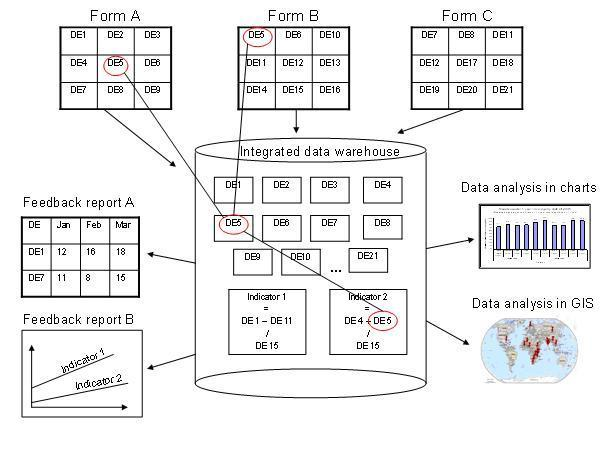

The datasets determine what raw data that is available in the system as they describe how data is collected. Through the data sets we define the building blocks of the data to be captured and stored in the DHIS. For each data dimension we decide what level of detail the data should be collected on; 1) the data element (e.g. diagnosis, vaccine, or any event taking place) and its categories (e.g. age and gender), 2) the period/frequency dimension, and 3) the orgunit dimension. For any report or data analysis you can never retrieve more detailed data than what is defined in the datasets so the design of the datasets and their corresponding data entry forms (the data collection tools) dictate what kind of data analysis that will be possible.
It is important to understand that the data entry forms or datasets themselves are not linked to the data (values) and that the meaning of data (the What) is only described by the data element (and its categories). This makes it perfectly safe to modify datasets and forms without altering the data (as long as the data elements stay the same). This loose coupling between forms and data makes DHIS flexible when it comes to designing and changing new forms and in providing exactly the form the users want.
Another benefit of only linking data to data elements and not to forms is the flexibility of creating indicators and validation rules based on data elements, and also in providing any kind of output report (in pivot tables, charts, maps etc) that can combine data individually or across forms, e.g. to correlate data from different health programs. Due to this flexibility of enabling integration of data from various programs (forms) and sources (routine and semi permanent (population, staff, equipment)) a DHIS database is used as an integrated data repository for many or all parts of the aggregated data in a larger HIS. The figure below illustrates this flexibility.
|  |